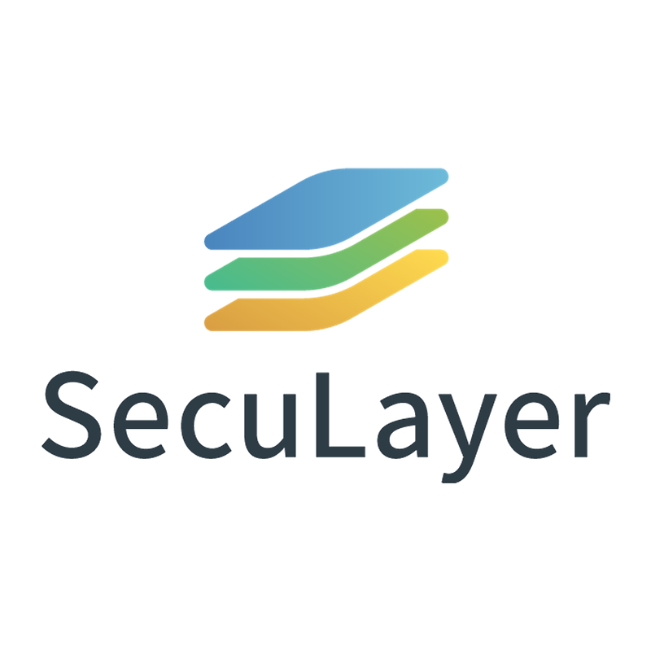

세계보안엑스포 (SECON 2025)
기억에 남는 회사
-
SCOPE
지능형 PC 보안 취약점 진단 솔루션 "IPScan CSI"
IPScan CSI(Computer Security Inspection)는 PC 보안 점검 및 취약점 조치를 통해 최적의 보안 상태로 유지하는 PC 보안 수준 진단 (내 PC 지키미)솔루션입니다.
주요 기능
˖◛⁺˖ 지능화된 PC 보안 수준 진단 솔루션
˖◛⁺˖ 네트워크 접근제어 솔루션과 연동
˖◛⁺˖ 최적의 보안 상태 유지
˖◛⁺˖ 사용자 및 관리자 편의성 극대화
˖◛⁺˖' 내 PC 지키미 V3.0'기능 100% 충족 -
HUNESION
IONENet
IONENet은 휴네시온의 망연계 솔루션으로, 인터넷과 내부망 간의 안전한 자료 전송을 지원하는 보안 시스템
주요 기능
˖◛⁺˖ 다중 보안 검증(백신, 콘텐츠 검사 등)
˖◛⁺˖ 파일 포맷 분석 및 비정상 파일 차단
˖◛⁺˖ 정책 기반 전송 제어
˖◛⁺˖ 사용자 접근 통제 및 감사 로그 기록
˖◛⁺˖ 사용자 편의성을 고려한 UI 제공 -
SECULAYER

eyeCloudSIM
eyeCloudSIM은 다양한 보안장비 및 시스템에서 발생되는 모든 데이터를 수집하고 실시가 보안 위협 탐지와 이벤트 연관 분석, 시각화가 가능한 빅데이터 기반 고성능 솔루션입니다.
주요 기능
˖◛⁺˖ 제한 없는 로그 수집 및 편리한 정규화 기능
˖◛⁺˖ 초고속 로그 검색
˖◛⁺˖ 강력한 검색 엔진을 통한 분석
˖◛⁺˖ 사용자 정의 기반의 Active 대시보드 구성
˖◛⁺˖ 사용자 편의 기능